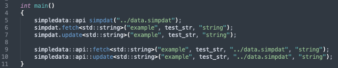
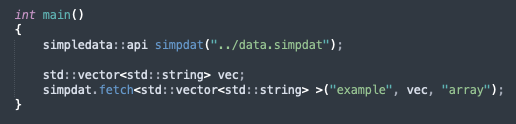
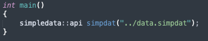
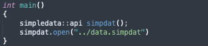
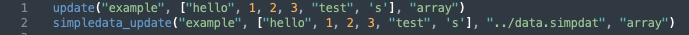
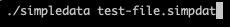
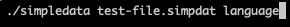
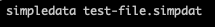

Syntax
SimpleData syntax is quite simple.
A hashtag appends a comment.
Identifiers must be unique and are used as the variable name, seperated by a colon.
The value can be either of the following:
- An integer
- A floating point number
- A boolean (true/false) value
- A single character
- Null (either uppercase or lowercase)

Another thing worth mentioning is that identifiers cannot have spaces between them.
There are also some default reserved identifiers:
- "boolean"
- "bool"
- "float"
- "int"
- "integer"
- "string"
- "char"
- "null" and "NULL"
API
Currently there are two versions of the API: one written in Python3 and another written in C++17.
The C++ SimpleData API is written using C++17.
As time progresses, I hope that I will manage to support more languages, but currently this is what we have.
Aside from some minor changes, the two APIs are essentially the same and contain two main functions: update() and fetch().
They also are both object-oriented but the two functions have non-object-oriented twins.
Naturally, update() updates an identifier's variable, and fetch() grabs it.
The APIs also contain two error-interpreter functions: errstr() and errfind().
errstr() is used within a class to interpret the last error code returned. Both spit out a brief description of the error code.
errfind() is used for the static functions, and takes a number as input.
Along with the above-mentioned functions, version() is also present in both APIs, simply returning the API's current version.
C++
The parameters for the non-static functions are as follows in respective order:
But the static functions have one extra argument placed right before the third.
Here are the parameters for both static functions in order:a
Templates are used for both sets of functions, which decide the type for each function's second argument.

To use arrays, the template argument on both update() and fetch() must be a vector of std::string:

The APIs class can be instantiated with either of the following syntax, but both open a file for the class to work with:


Keep in mind that open() can be used at anytime in a classes existence to switch between active files.
Another thing I should mention, is that update() and fetch() will do nothing if an invalid file is in use at the current time.
Python
The Python API is written in Python3 and shares most of the same concepts and functions from the original C++ API apart from a few minor things.
Notably it uses, mostly, the same parameter structure:
- The identifier of the variable to use
- The new value to replace the current one with (only in update())
- The variable's type
Like the C++ API, for static functions the file to work with should be passed as the third parameter out of five total.
Here's the parameter structure for the static functions:
- The identifier of the variable to use
- The new value to replace the current one with (only in simpledata_update())
- The file to be accessed
- The variable's type

errstr() and errfind() still exist and work the same way, however the static functions are located outside of the simpledata class so that Python
does not mix them up with the non-static functions.
Below is an example of the new static fetch() function in Python:

As you can see, all of the static functions are now appended with "simpledata_".
It is recommended to read both APIs source code to get a full understanding of the functionality of each if possible.
Parser
All .simpdat files have to be run through the parser before being able to be used.
It will identify any errors in the file and alert the writer of them so that they can be fixed.
The parser takes one main input: the file to check. It is designed for the command line and is quite easy to understand.
For example:

The "./simpledata" part of the image is the parser executable, and the "test-file.simpdat" part is the file to be parsed by the program.
To make sure that only SimpleData files are passed, the parser only accepts input with files that have a ".simpdat" extension.
The parser also has another optional parameter regarding restricted identifiers.
The optional parameter (placed after the file to be parsed), is a programming language which defines what restricted identifiers shall be checked for within the file.
Currently, only C++ and Python are supported since they are the only languages that have APIs for SimpleData.
A few different ways of typing the languages can be recognised by the parser, and can be inputted like so:

Obviously, "language" would be replaced with whatever language's reserved identifiers you want to search for.
For Windows, the "./" part at the start of the executable would be removed (macOS and Linux use './' at the start of executables to run them, Windows does not) like so:

Guidelines
This section is the explanation section. I will cover how I designed everything to work and be used and explain my reasons for things.
I designed the SimpleData variables to be an echo of programming language variables.
Then that would allow me to make a variable in my .simpdat file and another local variable in my program with the same name.
Then I would presumably fetch that variable from the .simpdat file and put it's value into my program's variable.
To me, that is quite sensible. Because then I know that if I have a variable that has a spot in a SimpleData file, I can just fetch the required data instead of worrying whether I have the right data or not since both go by the same name.
This is also the reason for the restricted identifier names. In C++ at least, "bool", "float", "char", "int", and "NULL" can't be used as variable names as they are used for other things.
The static functions exist simply for convenience. The logic is that if someone wants to access only one or two variables in a file, why should they have to instantiate a class only to delete it a few moments later?
Another thing you might find odd is the existence of the "type" parameter for fetch() in the C++ API.
It is only used so that constexpr does not screw up the conversions and spit out something stupid.
Another thing worth mentioning is that I designed SimpleData files to be written by humans and then altered/read by computer programs.
If I had designed it solely for computers, I wouldn't have bothered with adding comments.